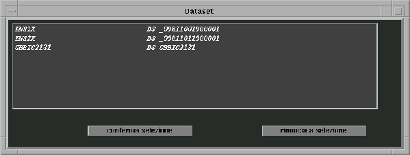
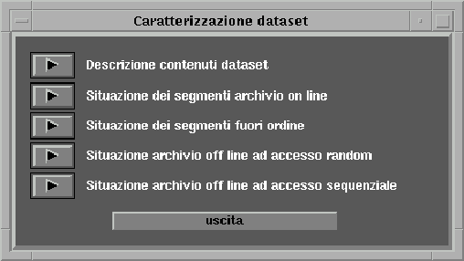
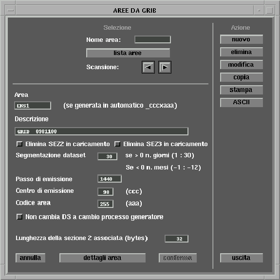

Sistema
Archiviazione GRIB 
Sistema
Archiviazione GRIB 
5.1.2 Visualizza contenuto dataset
Questa funzione permette di visualizzare direttamente il contenuto di un dataset senza dover passare per la funzione di modifica relativa alla gestione tabella (v. paragrafo precedente). Viene prima presentata la lista dei dataset presenti:

da qui, selezionando un item, compare la maschera che permette di scegliere il tipo di visualizzazione (il procedimento è uguale a quello descritto nel paragrafo precedente):

5.1.3 Gestione aree
Compare la seguente maschera:

In fase di modifica, oltre ai campi ausiliari qui presenti è possibile accedere alla visualizzazione della sezione 2 in formato GRIB (tasto SEZIONE 2), es.:
La funzione di stampa produce il seguente tipo di output:
La funzione di carico/scarico ASCII legge o scrive un file ASCII in cui ogni griglia è descritta da due records (ogni campo caratteri è compreso tra apici singoli e i campi sono distanziati uno dall'altro da uno spazio) più la sezione 2 grib descrittiva della griglia:
- Primo record: nome griglia.
- Secondo record: descrizione griglia, segmentazione dataset, cod. griglia, centro emissione, lunghezza sez. 2, passo di e1missione, flag elim. sez2 in caricamento, flag elim. sez3 in caricamento, flag di cambio dataset a cambio processo generatore.
esempio di file ASCII:
PICO
data s.r.l. Pagina
-